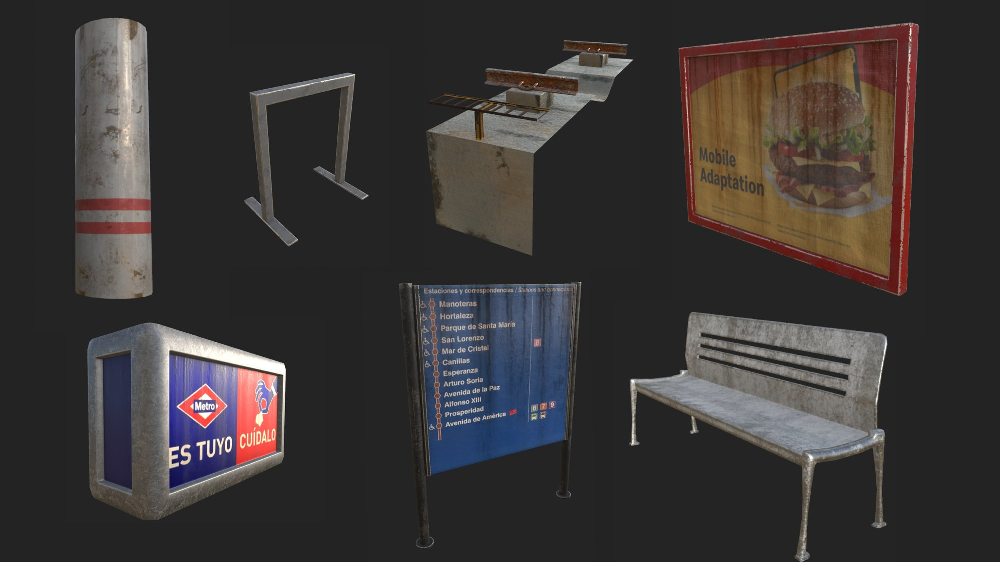
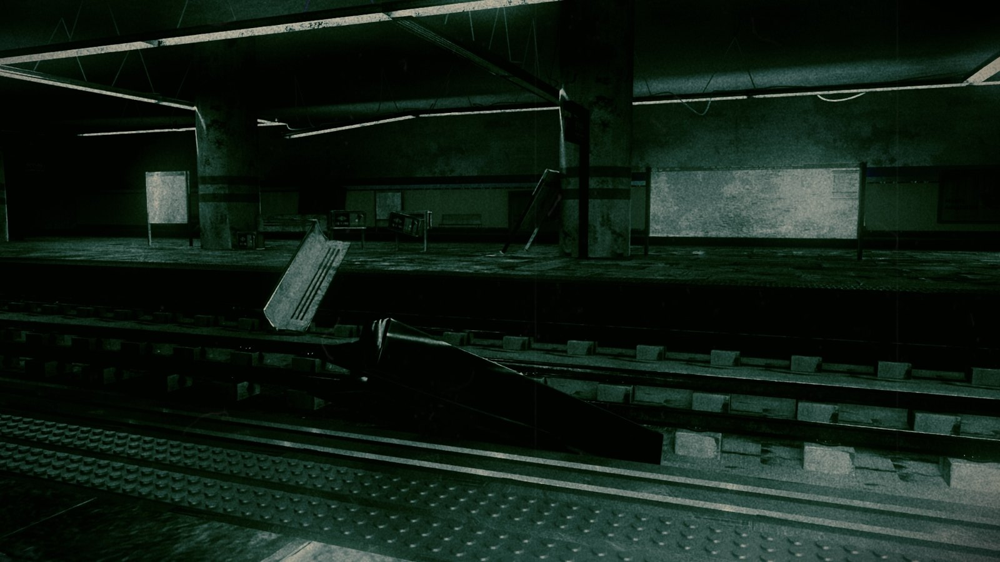
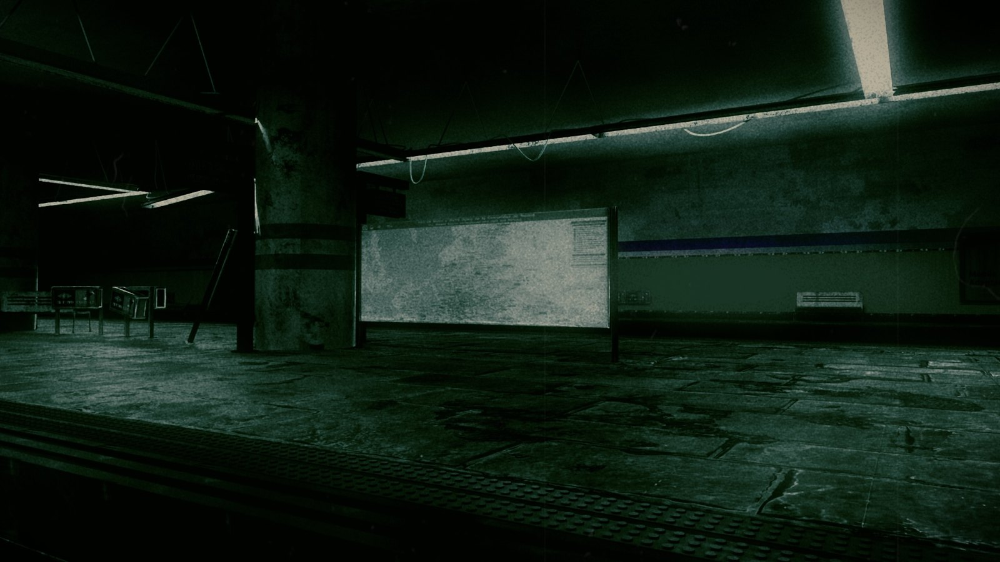

Metro · Modular Environment



University project: a modular environment inspired by the stations of the Madrid Metro, and in particular Pinar de Chamartín. The final look follows the gritty, abandoned atmosphere of Black Ops II Zombies. All assets and props are built to be reused and combined.
- Software
- 3ds Max, Substance Painter, Photoshop, DaVinci Resolve
- Type
- Modular environment